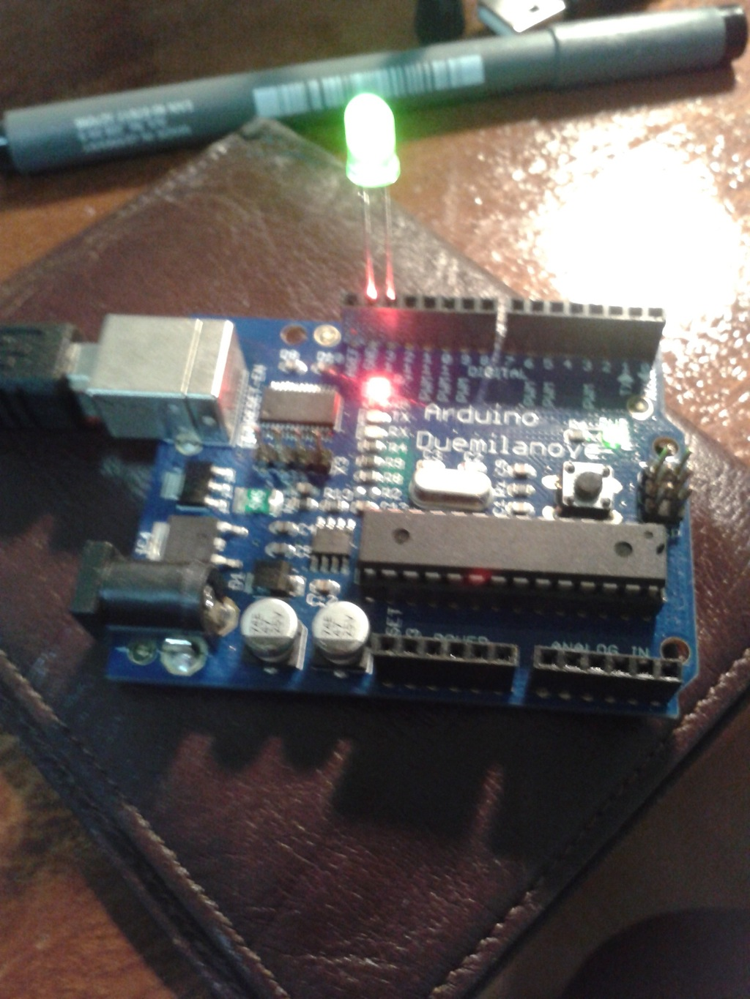
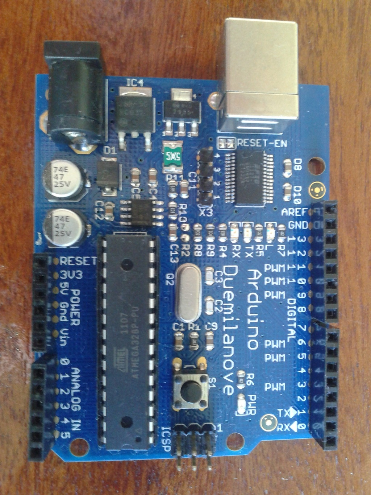
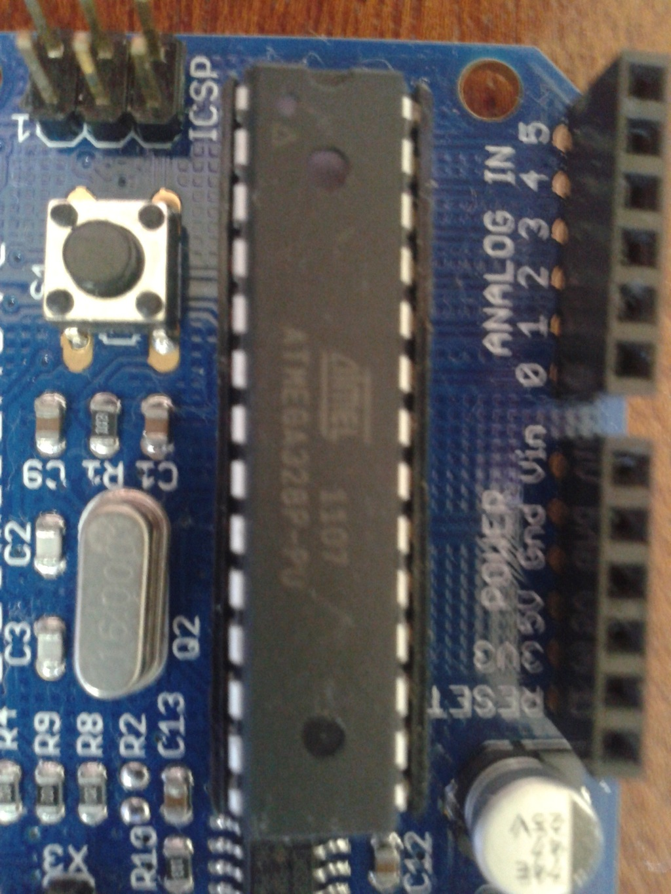
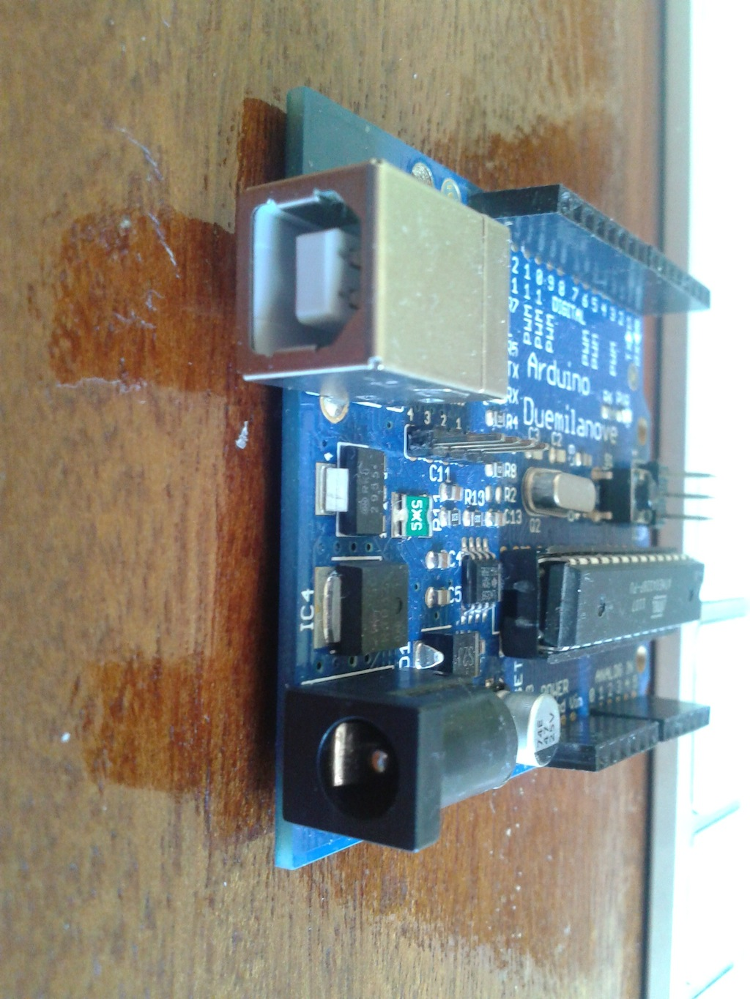

Há alguns meses atrás, fiquei empolgando em mexer novamente com eletrônica e resolvi comprar um Arduino Duemilanove. Este modelo possui uma microcontroladora ATmega328, conector de energia de corrente contínua 5V, USB do tipo de impressora, 6 portas analógicas (ANALOG IN), 14 portas de I/O (DIGITAL) – I/O ou E/S (Entrada/Saída) – sendo que 6 compartilhadas para PWM.
O Arduino pode receber alimentação via USB ou do plug de 5V, não há necessidade de configurar pois a seleção é automática. Recebendo energia, o LED PWR (verde) fica acesso indicando e sempre ao (re-)iniciar (reset) o Arduino, os LEDs TX (verde), RX (laranja) e L (vermelho) piscam e depois se apagam, como em um teste.
É possível alimentar o Arduino com pilha ou bateria, mas ainda não tive nenhuma experiência a este respeito. Por enquanto, ele não passa fome e se alimenta bem na rede elétrica, com uma fonte que retirei de um switch ethernet doméstico de 7,5V (a alimentação é mais flexível do que os 5V).
Com todas essas características de interfaceamento do Arduino, é fácil entender porque existem vários tipos de expansões para ele, como bluetooth, ethernet, LCD, sensores e que mais for possível imaginar. E é essa comunicação com o mundo real é que é o grande barato do Arduino. Muitos projetos de automação de casas e robôs têm como base um Arduino, é só procurar.
O Duemilanove requer a instalação de um driver USB serial para o Mac OS X, que é descrito como um FTDI VCP driver, a versão que tenho é a 2.2.18 de 2012-08-10. Meu Macintosh para o uso com o Arduino é um Macbook de 2006 (Intel) que roda o Mac OS 10.6.8. O driver funciona direito neste Mac. Tenho um Macbook Pro de 2009 com Mountain Lion, mas nunca testei a instalação desse driver. Confesso que fiquei um pouco com receio, por achar que o mesmo pudesse começar a gerar problemas com essa máquina, que uso profissionalmente.
A IDE do Arduino (Arduino.app versão 1.0.1) é uma aplicação gráfica para Mac e proporciona a interação com o Arduino. Dentro da IDE, configurei o modelo do meu Arduino (Tools > Board > Arduino Duemilanove w/ AT mega328) e a porta serial (Tools > Serial port > /dev/tty.usbserial-A400f1lw) a ser utilizada.
Costumo falar (em tom de brincadeira) pro meu amigo Elvis (epx) que os computadores de 8-bits dos anos 80 deveriam vir com essas portas de expansão (digital e analógica) e a facilidade de uso que o Arduino proporciona, pois assim poderiam ter sido mais úteis!
Voltando ao presente, diferente dos computadores de desktop a microcontroladora do Arduino é de arquitetura Harvard, isto quer dizer que a memória de programas e a memória de dados são diferentes e de tamanhos diferentes. Os computadores de desktop são todos de arquitetura Von Neumann, pois os programas e dados compartilham a mesma memória.
O modelo que adquiri possui 32KB de memória Flash (2KB são de uso do bootloader), 2KB de SRAM e 1KB de EEPROM. O clock do sistema é de 16MHz. É possível consultar o diagrama esquemático do Arduino para identificar os compoenntes.
A programação do Arduino se realiza através da IDE com a edição de código em C, que é traduzido para a linguagem de máquina da microcontroladora. Os passos necessários para programar um Arduino são estes:
Mesmo com o Arduino de fábrica piscando, resolvi pegar o exemplo em C de piscar o LED (File > Examples > Basic > Blink ) e subir novamente para o Arduino, o único requisito para isso acontecer foi ter o Arduino conectado com o meu Mac, via cabo USB. Após compilar e subir o código, o Arduino estava novamente piscando o LED interno.
Para se acostumar com a programação do Arduino, recomendo olhar os várias exemplos de código que estão disponíveis na IDE. São exemplos simples que demonstram todos os recursos de interfaceamento. Os aplicativos do Arduino desenvolvidos com a IDE são chamados de sketches.
O pino 13 de I/O possui em paralelo um resistor de 1k e um LED (L) vermelho ligado no Vcc. No meu caso, a plaquinha já veio com o programa de piscar o LED carregado, foi só ligar na energia pra ver piscar. Pelo fato de ter um resistor de 1k no pino 13, é fácil fazer um LED externo piscar, basta conectar a perna com o chanfro (parte cortada) do LED no terra (GND) e a outra perna na porta 13 de I/O, o mesmo código vai fazer piscar ambos os LEDs.
Para conectar mais LEDs nas portas de I/O, conecte a perna com o chanfro do LED no terra (conectar em GND) e noutra perna, conecte um resistor de 1k para o pino de dados. Quem estudou um pouco de eletrônica sabe que o LED só vai queimar se passar uma corrente maior do que o LED suporta, por isso o resistor de 1k.
Programar em C no Arduino é simples mas um pouco diferente da programação normal em desktops. Ao invés de termos uma função main() como ponto de entrada, temos duas funções que devemos implementar: setup() e loop(). A função setup() é responsável por configurar o que for necessário toda a vez que o Arduino iniciar ou fizer reset. A função loop() é sempre executada pela controladora, e é aonde se põe a lógica de programação que se quer fazer ao Arduino. Esse laço infinito não vai queimar, desperdiçar ou aquecer a CPU.
Neste exemplo, o pino 13 é configurado para OUTPUT. Note que fazer um sinal alto (HIGH) em um pino é ativar 5V nele, como efeito o LED acende. Fazer o sinal baixo (LOW) é por 0V e vai apagar o LED.
Para quem tem um pouco de receio de mexer com o Arduino, recomendo alterar o parâmetro de delay() para ver o resultado, pois é seguro fazer e dá uma certa confiança para outras aventuras.
O Arduino é fácil de usar, mesmo para quem não tem muita experiência com eletrônica. É claro que como se está mexendo com hardware é sempre possível queimar a plaquinha, mas faz parte do jogo. Existem muitas possibilidades com o Arduino mesmo com as limitação de não ser um computador genérico como o Raspberry Pi. Mas para controlar e interfacear com coisas externas, cumpre muito bem.
Não foi explorado nesse artigo a utilização das portas analógicas, muito menos a utilização de comunicação serial com o Arduino via USB ou ICSP. Aliás, os LEDs TX e RX que citei inicialmente são os indicadores de transmissão (TX) e recepção (RX) de dados da interface serial, que estão disponíveis via pinos RX e TX.
|  |  |  |  |
{kind=link}
{kind=link}
{kind=link}
{kind=link}